стр. 77 Обвинительное заключение Кореца и Ландау от 14.01.39 стр. 78 стр. 79 стр. 80
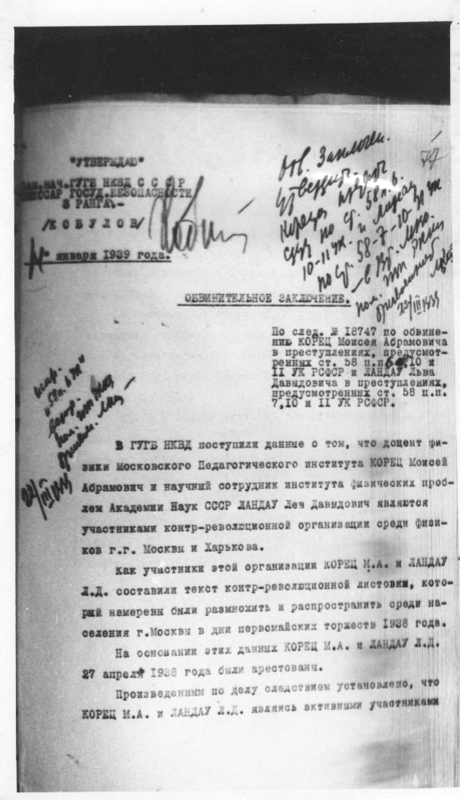
77
"УТВЕРЖДАЮ"
ЗАМ. НАЧ. ГУГБ НКВД СССР
КОМИССАР ГОСУД. БЕЗОПАСНОСТИ
3 РАНГА. -
/КОБУЛОВ/
[нрзб]
[нрзб] января 1939 года.
[на полях] [нрзб]
ОБВИНИТЕЛЬНОЕ ЗАКЛЮЧЕНИЕ.
По след. делу № 18747 по обвине-
нию КОРЕЦ Моисея Абрамовича
в преступлениях, предусмот-
ренных ст. 58 п.п. 6, 10 и
11 УК РСФСР и ЛАНДАУ Льва
Давидовича в преступлениях,
предусмотренных ст. 58 п.п.
7, 10 и 11 УК РСФСР.
[на полях] [нрзб]
В ГУГБ НКВД поступили данные о том, что доцент фи-
зики Московского Педагогического института КОРЕЦ Моисей
Абрамович и научный сотрудник института физических проб-
лем Академии Наук СССР ЛАНДАУ Лев Давидович являются
участниками контр-революционной организации среди физи-
ков г.г. Москвы и Харькова.
Как участники этой организации КОРЕЦ М.А. и ЛАНДАУ
Л.Д. составили текст контр-революционной листовки, кото-
рый намерены были размножить и распространить среди на-
селения г. Москвы в дни первомайских торжеств 1938 года.
На основании этих данных КОРЕЦ М.А. и ЛАНДАУ Л.Д.
27 апреля 1938 года были арестованы.
Произведенным по делу следствием установлено, что
КОРЕЦ М.А. и ЛАНДАУ Л.Д. являясь активными участниками
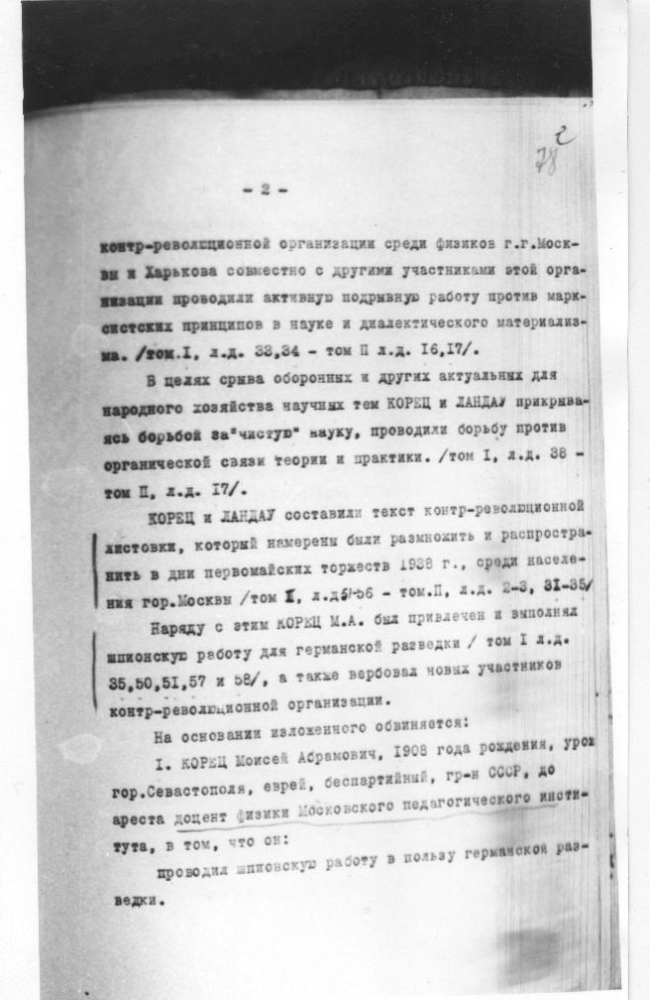
78
- 2 -
контр-революционной организации среди физиков г.г. Моск-
вы и Харькова совместно с другими участниками этой орга-
низации проводили активную подрывную работу против марк-
систских принципов в науке и диалектического материализ-
ма. /том I, л.д. 32,34 - том II л.д. 16,17/.
В целях срыва оборонных и других актуальных для
народного хозяйства научных тем КОРЕЦ и ЛАНДАУ прикрыва-
ясь борьбой за "чистую" науку, проводили борьбу против
органической связи теории и практики. /том I, л.д. 38 -
том II, л.д. 17/.
КОРЕЦ и ЛАНДАУ составили текст контр-революционной
листовки, который намерены были размножить и распростра-
нить в дни первомайских торжеств 1938 г., среди населе-
ния гор. Москвы /том I, л.д. 51-56 - том II, л.д. 2-3, 31-35/.
Наряду с этим КОРЕЦ М.А. был привлечен и выполнял
шпионскую работу для германской разведки /том I л.д.
35,50,51,57 и 58/, а также вербовал новых участников
контр-революционной организации.
На основании изложенного обвиняется:
1. КОРЕЦ Моисей Абрамович, 1908 года рождения, урож.
гор. Севастополя, еврей, беспартийный, гр-н СССР, до
ареста доцент физики Московского педагогического инсти-
тута, в том, что он:
проводил шпионскую работу в пользу германской раз-
ведки.
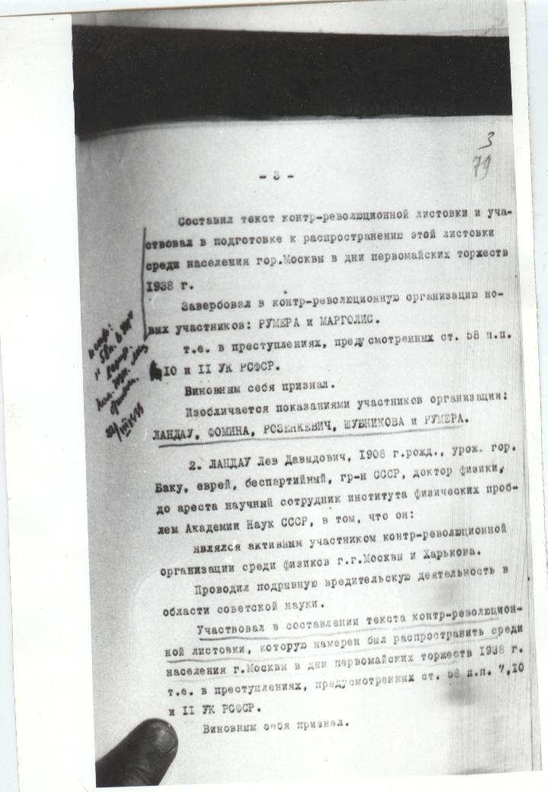
79
- 3 -
Составил текст контр-революционной листовки и уча-
ствовал в подготовке к распространению этой листовки
среди населения гор. Москвы в дни первомайских торжеств
1938 г.
Завербовал в контр-революционную организацию но-
вых участников: РУМЕРА и МАРГОЛИС.
т.е. в преступлениях, предусмотренных ст. 58 п.п.
10 и 11 УК РСФСР.
Виновным себя признал.
Изобличается показаниями участников организации:
ЛАНДАУ, ФОМИНА, РОЗЕНКЕВИЧА, ШУБНИКОВА и РУМЕРА.
2. ЛАНДАУ Лев Давидович, 1908 г. рожд., урож. гор.
Баку, еврей, беспартийный, гр-н СССР, доктор физики,
до ареста научный сотрудник института физических проб-
лем Академии Наук СССР, в том, что он:
являлся активным участником контр-революционной
организации среди физиков г.г. Москвы и Харькова.
Проводил подрывную вредительскую деятельность в
области советской науки.
Участвовал в составлении текста контр-революцион-
ной листовки, которую намерен был распространить среди
населения г. Москвы в дни первомайских торжеств 1938 г.
т.е. в преступлениях, предусмотренных ст. 58 п.п. 7, 10
и 11 УК РСФСР.
Виновным себя признал.
[на полях] [нрзб]
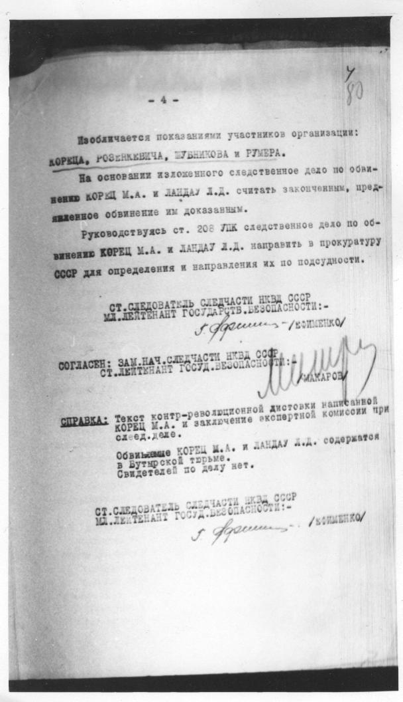
80
- 4 -
Изобличается показаниями участников организации:
КОРЕЦА, РОЗЕНКЕВИЧА, ШУБНИКОВА и РУМЕРА.
На основании изложенного следственное дело по обви-
нению КОРЕЦ М.А. и ЛАНДАУ Л.Д. считать законченным, пред-
явленное обвинение им доказанным.
Руководствуясь ст. 208 УПК следственное дело по об-
винению КОРЕЦ М.А. и ЛАНДАУ Л.Д. направить в прокуратуру
СССР для определения и направления их по подсудности.
СТ. СЛЕДОВАТЕЛЬ СЛЕДЧАСТИ НКВД СССР
МЛ. ЛЕЙТЕНАНТ ГОСУДАРСТВ. БЕЗОПАСНОСТИ: -
[нрзб] /ЕФИМЕНКО/
СОГЛАСЕН: ЗАМ. НАЧ. СЛЕДЧАСТИ НКВД СССР
СТ. ЛЕЙТЕНАНТ ГОСУД. БЕЗОПАСНОСТИ: -
[нрзб] /МАКАРОВ/
СПРАВКА: Текст контр-революционной листовки написанной
КОРЕЦ М.А. и заключение экспертной комиссии при
след. деле.
Обвиняемые КОРЕЦ М.А. и ЛАНДАУ Л.Д. содержатся
в Бутырской тюрьме.
Свидетелей по делу нет.
СТ. СЛЕДОВАТЕЛЬ СЛЕДЧАСТИ НКВД СССР
МЛ. ЛЕЙТЕНАНТ ГОСУДАРСТВ. БЕЗОПАСНОСТИ: -
[нрзб] /ЕФИМЕНКО/
62
[на полях] 02/6/
"УТВЕРЖДАЮ"
НАЧ. СЛЕДЧАСТИ НКВД СССР
КОМИССАР ГОС. БЕЗОПАСНОСТИ
3 РАНГА. -
[зачеркнуто: /КОБУЛОВ/]
[нрзб]
1 [нрзб] 1939 г.
[на полях] [нрзб]
ОБВИНИТЕЛЬНОЕ ЗАКЛЮЧЕНИЕ
По следственному делу № 18747
по обвинению КОРЕЦ Моисея Абра-
мовича в преступлениях, предусмот-
ренных ст. 58 п.п. 6, 10 и 11 УК
РСФСР.
В ГУГБ НКВД поступили данные о том, что доцент
физики Московского Педагогического Института КОРЕЦ
Моисей Абрамович является участником антисоветской
организации и что как активный участник этой органи-
зации КОРЕЦ М.А. составил текст антисоветской листовки,
которую он намерен был размножить и распространить
среди населения гор. Москвы в дни первомайских торжеств
1938 года.
На основании этих данных КОРЕЦ М.А. 27/IV-1938
года был арестован.
Произведенным по делу следствием установлено,
что КОРЕЦ М.А. являясь активным участником антисовет-
ской организации, существовавшей среди физиков г.г.
Москвы и Харькова совместно с другими участниками этой
организации проводил антисоветскую подрывную работу
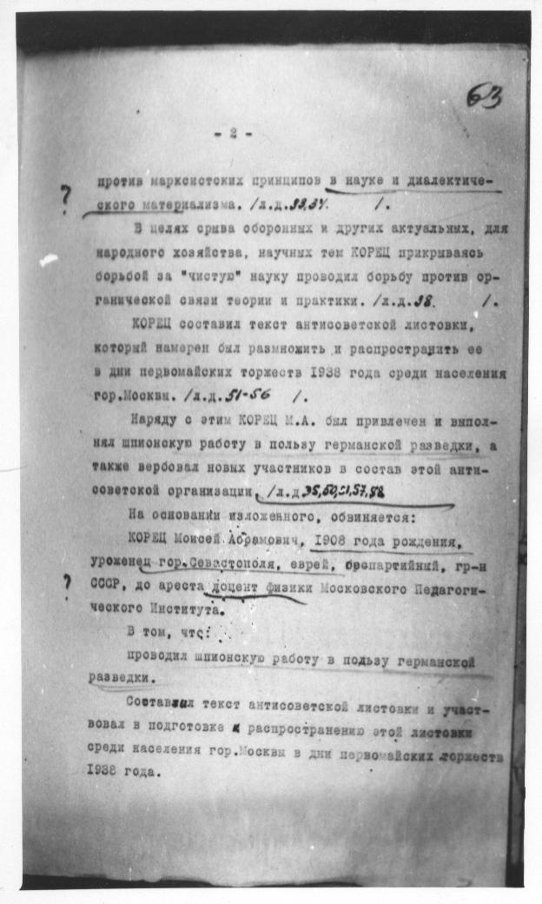
63
- 2 -
против марксистских принципов в науке и диалектиче-
ского материализма. /л.д. 32,34/.
В целях срыва оборонных и других актуальных, для
народного хозяйства, научных тем КОРЕЦ прикрываясь
борьбой за "чистую" науку проводил борьбу против ор-
ганической связи теории и практики. /л.д. 38/.
КОРЕЦ составил текст антисоветской листовки,
который намерен был размножить и распространить ее
в дни первомайских торжеств 1938 года среди населения
гор. Москвы. /л.д. 51-56/.
Наряду с этим КОРЕЦ М.А. был привлечен и выпол-
нял шпионскую работу в пользу германской разведки, а
также вербовал новых участников в состав этой анти-
советской организации. /л.д. 35,50,51,57,58/
На основании изложенного, обвиняется:
КОРЕЦ Моисей Абрамович, 1908 года рождения,
уроженец гор. Севастополя, еврей, беспартийный, гр-н
СССР, до ареста доцент физики Московского Педагоги-
ческого Института.
В том, что:
проводил шпионскую работу в пользу германской
разведки.
Составил текст антисоветской листовки и участ-
вовал в подготовке к распространению этой листовки
среди населения гор. Москвы в дни первомайских торжеств
1938 года.
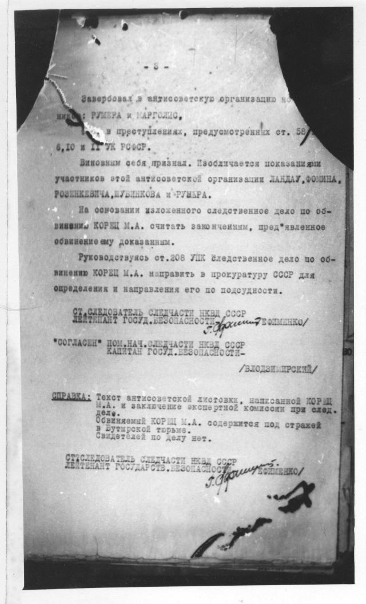
- 3 -
Завербовал в антисоветскую организацию но-
вых: РУМЕРА и МАРГОЛИС.
т.е. в преступлениях, предусмотренных ст. 58
п. 6, 10 и 11 УК РСФСР.
Виновным себя признал. Изобличается показаниями
участников этой антисоветской организации ЛАНДАУ, ФОМИНА,
РОЗЕНКЕВИЧА, ШУБНИКОВА и РУМЕРА.
На основании изложенного следственное дело по об-
винению КОРЕЦ М.А. считать законченным, предъявленное
обвинение ему доказанным.
Руководствуясь ст. 208 УПК следственное дело по об-
винению КОРЕЦ М.А. направить в прокуратуру СССР для
определения и направления его по подсудности.
СТ. СЛЕДОВАТЕЛЬ СЛЕДЧАСТИ НКВД СССР
ЛЕЙТЕНАНТ ГОСУД. БЕЗОПАСНОСТИ [нрзб] /ЕФИМЕНКО/
"СОГЛАСЕН" ПОМ. НАЧ. СЛЕДЧАСТИ НКВД СССР
КАПИТАН ГОСУД. БЕЗОПАСНОСТИ -
/ВЛОДЗИМИРСКИЙ/
СПРАВКА: Текст антисоветской листовки, написанной КОРЕЦ
М.А. и заключение экспертной комиссии при след.
деле.
Обвиняемый КОРЕЦ М.А. содержится под стражей
в Бутырской тюрьме.
Свидетелей по делу нет.
СТ. СЛЕДОВАТЕЛЬ СЛЕДЧАСТИ НКВД СССР
ЛЕЙТЕНАНТ ГОСУДАРСТВ. БЕЗОПАСНОСТИ [нрзб] /ЕФИМЕНКО/
стр.82 Обращение в военный трибунал, после 07.06.39
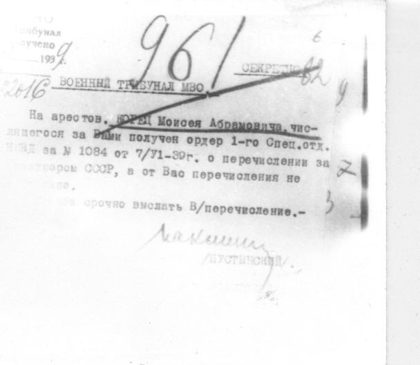
[печать] Трибунал
получено
1939 г.
[на полях] 2016
[на полях] 961
[на полях] 6
СЕКРЕТНО
[на полях] 62
ВОЕННЫЙ ТРИБУНАЛ МВО.
На арестован. КОРЕЦ Моисея Абрамовича, чис-
лящегося за Вами получен ордер 1-го Спец.отд.
НКВД за № 1084 от 7/VI-39г. о перечислении за
[нрзб] СССР, а от Вас перечисления не
[нрзб].
[нрзб] срочно выслать В/перечисление.-
Начальник
[нрзб]
(ПУСТИНСКИЙ)
Распоряжение помощника главного военного прокурора
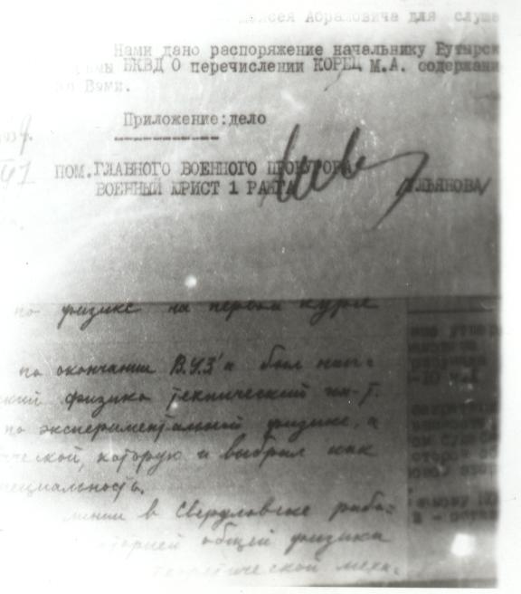
Чтение снимка, местами неуверенное. Сверьте со снимком.
[нрзб] Моисея Абрамовича для служб[нрзб]
Нами дано распоряжение начальнику Бутырск[нрзб]
тюрьмы НКВД о перечислении КОРЕЦ М.А. содержащ[нрзб]
за Вами.
Приложение: дело
ПОМ. ГЛАВНОГО ВОЕННОГО ПРОКУРОРА
ВОЕННЫЙ ЮРИСТ 1 РАНГА [нрзб] [нрзб]ЬЯНОВА/
[нрзб]
по физике на первых курсах
[нрзб]
по окончании [нрзб] был нап-
[нрзб] физико-технический [нрзб]
по экспериментальной физике, а
[нрзб] которую и выбрал как
специальность.
[нрзб]
[нрзб] в Свердловске работ[нрзб]
[нрзб] общей физики
[нрзб]
стр.67 Выписка из протокола предварительного заседания, 13.10.39
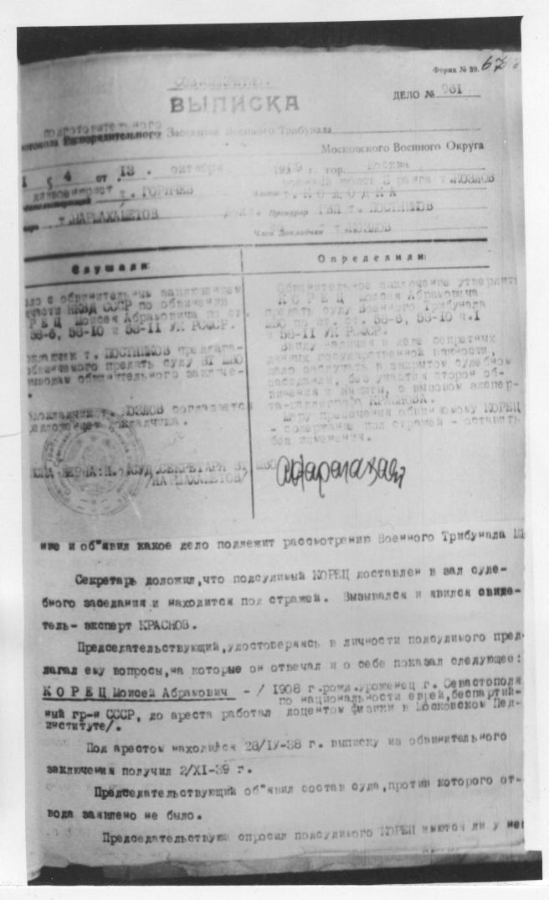
Форма № 39. [нрзб]
ДЕЛО № 961
СОВ. СЕКРЕТНО.
ВЫПИСКА
из протокола закрытого
Распорядительного Заседания Военного Трибунала
Московского Военного Округа
154 от 18 октября 1939 г. гор. Москва
[нрзб] т. [нрзб]
председатель военный юрист 3 ранга т. КОЛОДКА
[нрзб] т. [нрзб]
[нрзб] т. [нрзб]
Слушали:
Дело с обвинительным заключением
в отношении КОРЕЦ Моисея Абрамовича
по ст. 58-6, 58-10 и 58-11 УК РСФСР.
[нрзб] т. ПОСТИКОВ предлагает
[нрзб] предать суду ВТ МВО
[нрзб] обвинительного заключения.
Председатель т. [нрзб] соглашается
[нрзб] и [нрзб].
Определили:
Обвинительное заключение утвердить.
КОРЕЦ Моисея Абрамовича
предать суду Военного Трибунала
МВО по ст. ст. 58-6, 58-10 ч. 1
и 58-11 УК РСФСР.
Дело [нрзб] в деле секретных
[нрзб] в закрытом судебном
заседании, без участия сторон обви-
нения и защиты, с вызовом экспер-
та-специалиста КРАСНОВА.
Меру пресечения обвиняемому КОРЕЦ
- содержание под стражей - оставить
без изменения.
[печать]
[нрзб]
ние и объявил какое дело подлежит рассмотрению Военного Трибунала МВО.
Секретарь доложил, что подсудимый КОРЕЦ доставлен в зал судеб-
ного заседания и находится под стражей. Вызвался и явился свиде-
тель - эксперт КРАСНОВ.
Председательствующий, удостоверившись в личности подсудимого пред-
лагал ему вопросы, на которые он отвечал и о себе показал следующее:
КОРЕЦ Моисей Абрамович - / 1908 г. рожд., уроженец г. Севастополя
по национальности еврей, беспартий-
ный гр-н СССР, до ареста работал доцентом физики в Московском Пед-
институте/.
Под арестом находится с 28/IV-38 г. выписку из обвинительного
заключения получил 2/XI-39 г.
Председательствующий объявил состав суда, против которого от-
вода заявлено не было.
Председательствующий опросил подсудимого КОРЕЦ имеются ли у него
К делу № 961 экз. № СОВ. СЕКРЕТНО. Форма № 1.
Протокол судебного заседания
1939 года ноября „25" дня, Военный Трибунал
Московского военного округа в закрытом судебном заседании
в гор. Москве в составе: председательствующего военного
юриста 3 ранга т. КОЛОДКА и членов капитана АВИЛОВА
и старшего лейтенанта тов. СУЛИМОВА.
с участием военного
прокурора
, общественного обвинителя
и защиты,
состоящей из Ч. К. З.
, при секретаре военном юристе тов. ЮЛЧЕВЕ.
рассматривал дело по обвинению КОРЕЦ Моисея Абрамовича
по ст.ст. 58-6, 58-10, 58-11 УК РСФСР.
[на полях] [нрзб]
В 11 час.45 мин. председательствующий открыл судебное заседа-
ние и объявил какое дело подлежит рассмотрению Военного Трибунала МВО.
Секретарь доложил, что подсудимый КОРЕЦ доставлен в зал судеб-
ного заседания и находится под стражей. Вызвался и явился свиде-
тель - эксперт КРАСНОВ.
Председательствующий, удостоверившись в личности подсудимого пред-
лагал ему вопросы, на которые он отвечал и о себе показал следующее:
КОРЕЦ Моисей Абрамович - / 1908 г. рожд., уроженец г. Севастополя
по национальности еврей, беспартий-
ный гр-н СССР, до ареста работал доцентом физики в Московском Пед-
институте/.
Под арестом находится с 28/IV-38 г. выписку из обвинительного
заключения получил 2/XI-39 г.
Председательствующий объявил состав суда, против которого от-
вода заявлено не было.
Председательствующий опросил подсудимого КОРЕЦ имеются ли у него
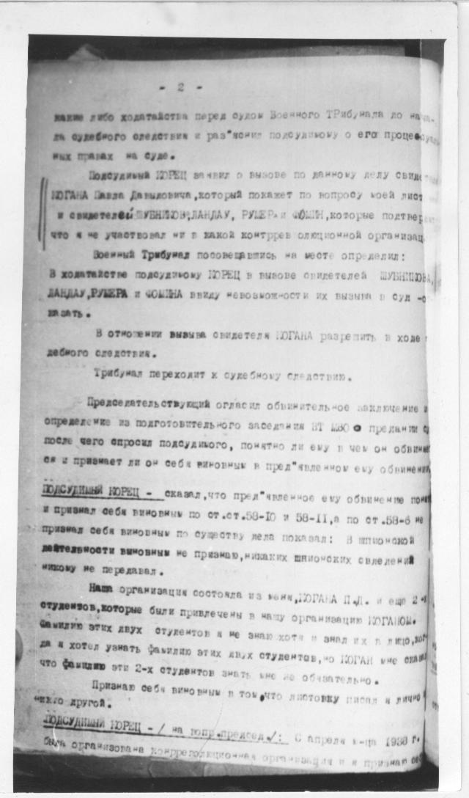
- 2 -
[нрзб] либо ходатайства перед судом Военного Трибунала до нача-
ла судебного следствия и разъяснил подсудимому о его процессуаль-
ных правах на суде.
Подсудимый КОРЕЦ заявил о вызове по данному делу свиде-
теля КОГАНА Павла Давыдовича, который покажет по вопросу моей листо-
вки и свидетелей ШУБНИКОВА, ЛАНДАУ, РУМЕРА и ФОМИНА, которые подтвердят
что я не участвовал ни в какой контрреволюционной организации.
Военный Трибунал посовещавшись на месте определил:
В ходатайстве подсудимому КОРЕЦ в вызове свидетелей ШУБНИКОВА,
ЛАНДАУ, РУМЕРА и ФОМИНА ввиду невозможности их вызова в суд от-
казать.
В отношении вызова свидетеля КОГАНА разрешить в ходе су-
дебного следствия.
Трибунал переходит к судебному следствию.
Председательствующий огласил обвинительное заключение и
определение из подготовительного заседания ВТ МВО о предании суду
после чего опросил подсудимого, понятно ли ему в чем он обвиня-
ется и признает ли он себя виновным в предъявленном ему обвинении.
ПОДСУДИМЫЙ КОРЕЦ - сказал, что предъявленное ему обвинение понял
и признал себя виновным по ст.ст. 58-10 и 58-11, а по ст. 58-6 не
признал себя виновным по существу дела показал: В шпионской
деятельности виновным не признаю, никаких шпионских сведений
никому не передавал.
Наша организация состояла из меня, КОГАНА П.Д. и еще 2-х
студентов, которые были привлечены в нашу организацию КОГАНОМ.
Фамилию этих двух студентов я не знаю хотя и видел их в лицо, хотел
да я хотел узнать фамилию этих двух студентов, но КОГАН мне сказал
что фамилию эти 2-х студентов знать мне не обязательно.
Признаю себя виновным в том, что листовку писал я лично
некто другой.
ПОДСУДИМЫЙ КОРЕЦ - / на вопр. председ./: С апреля м-ца 1938 г.
была организована контрреволюционная организация и я признал себ
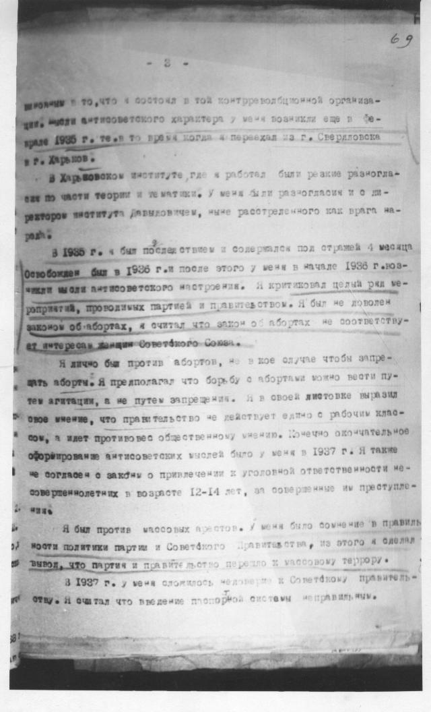
[на полях] 69
- 3 -
виновным в том, что я состоял в той контрреволюционной организа-
ции. Мысли антисоветского характера у меня возникли еще в фе-
врале 1935 г. т.е. в то время когда я переехал из г. Свердловска
в г. Харьков.
В Харьковском институте, где я работал были резкие разногла-
сия по части теории и тематики. У меня были разногласия и с ди-
ректором института Давидовичем, ныне расстрелянного как врага на-
рода.
В 1935 г. я был подследственным и содержался под стражей 4 месяца
Освобожден был в 1936 г. и после этого у меня в начале 1936 г. воз-
никли мысли антисоветского настроения. Я критиковал целый ряд ме-
роприятий, проводимых партией и правительством. Я был не доволен
законом об абортах, я считал что закон об абортах не соответству-
ет интересам женщин Советского Союза.
Я лично был против абортов, но в кое случае чтобы запре-
щать аборты. Я предполагал что борьбу с абортами можно вести пу-
тем агитации, а не путем запрещения. Я в своей листовке выразил
свое мнение, что правительство не действует едино с рабочим клас-
сом, а идет противовес общественному мнению. Конечно окончательное
оформление антисоветских мыслей было у меня в 1937 г. Я также
не согласен с законом о привлечении к уголовной ответственности не-
совершеннолетних в возрасте 12-14 лет, за совершенные им преступле-
ния.
Я был против массовых арестов. У меня было сомнение в правиль-
ности политики партии и Советского Правительства, из этого я сделал
вывод, что партия и правительство перешло к массовому террору.
В 1937 г. у меня сложилось недоверие к Советскому правитель-
ству. Я считал что введение паспортной системы неправильно.
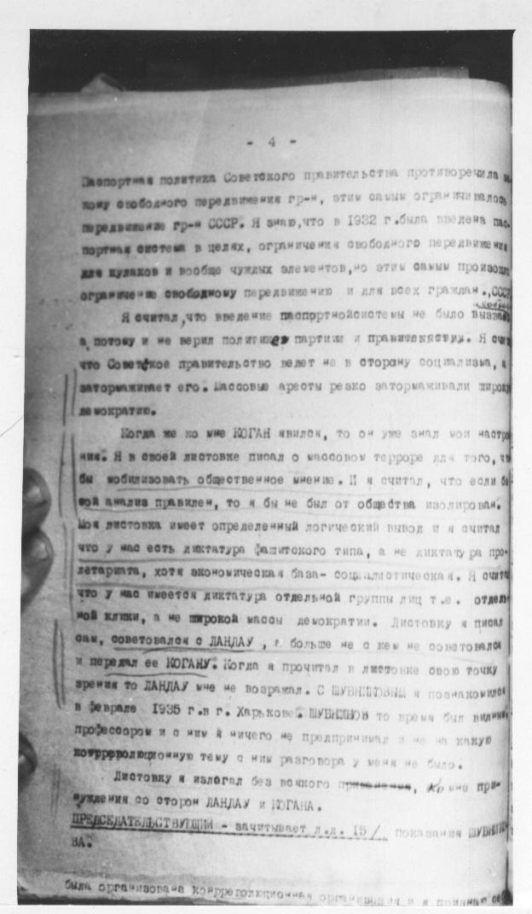
- 4 -
Паспортная политика Советского правительства противоречила за-
кону свободного передвижения гр-н, этим самым ограничивалось
передвижение гр-н СССР. Я знаю, что в 1932 г. была введена пас-
портная система в целях, ограничения свободного передвижения
для кулаков и вообще чуждых элементов, но этим самым произошло
ограничение свободному передвижению и для всех граждан СССР.
Я считал, что введение паспортной системы не было вызвано
[нрзб], потому и не верил политике партии и правительства. Я считал
что Советское правительство ведет не в сторону социализма, а
затормаживает его. Массовые аресты резко затормаживали широкую
демократию.
Когда же ко мне КОГАН явился, то он уже знал мои настро-
ения. Я в своей листовке писал о массовом терроре для того, что
бы мобилизовать общественное мнение. И я считал, что если бы
мой анализ правилен, то я бы не был от общества изолирован.
Моя листовка имеет определенный логический вывод и я считал
что у нас есть диктатура фашистского типа, а не диктатура про-
летариата, хотя экономическая база - социалистическая. Я считал
что у нас имеется диктатура отдельной группы лиц т.е. отдель-
ной клики, а не широкой массы демократии. Листовку я писал
сам, советовался с ЛАНДАУ, т. больше не с кем не советовался
и передал ее КОГАНУ. Когда я прочитал в листовке свою точку
зрения то ЛАНДАУ мне не возразил. С ШУБНИКОВЫМ я познакомился
в феврале 1935 г. в г. Харькове. ШУБНИКОВ в то время был видным
профессором и с ним я ничего не предпринимал и не на какую
контрреволюционную тему с ним разговора у меня не было.
Листовку я излагал без всякого принуждения, ко мне при-
нуждения со сторон ЛАНДАУ и КОГАНА.
ПРЕДСЕДАТЕЛЬСТВУЮЩИЙ - зачитывает л.д. 15 / показания ШУБНИКОВА
[нрзб]
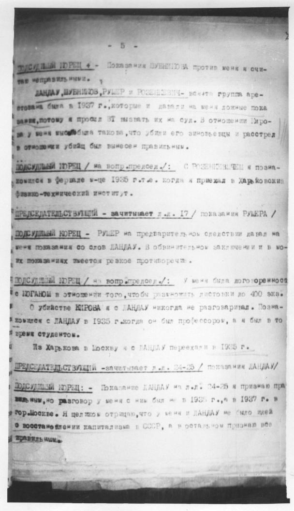
- 5 -
ПОДСУДИМЫЙ КОРЕЦ: - Показания ШУБНИКОВА против меня я счи-
таю неправильными.
ЛАНДАУ, ШУБНИКОВ, РУМЕР и РОЗЕНКЕВИЧ - вся эта группа аре-
стована была в 1937 г., которые и давали на меня ложные пока-
зания, потому я просил ВТ вызвать их на суд. В отношении Киро-
ва у меня мысль была такова, что убили его заговорщики и расстрел
в отношении убийц был вынесен правильным.
ПОДСУДИМЫЙ КОРЕЦ / на вопр. председ./: С РОЗЕНКЕВИЧЕМ я позна-
комился в феврале м-це 1935 г. т.е. когда я приехал в Харьковский
физико-технический институт.
ПРЕДСЕДАТЕЛЬСТВУЮЩИЙ - зачитывает л.д. 17 / показания РУМЕРА /
ПОДСУДИМЫЙ КОРЕЦ - РУМЕР на предварительном следствии давал на
меня показания со слов ЛАНДАУ. В обвинительном заключении и в мо-
их показаниях имеется резкое противоречие.
ПОДСУДИМЫЙ КОРЕЦ / на вопр. председ./: У меня была договоренность
с КОГАНОМ в отношении того, чтобы размножить листовки до 400 экз.
О убийстве КИРОВА я с ЛАНДАУ никогда не разговаривал. Позна-
комился с ЛАНДАУ в 1935 г. когда он был профессором, а я был в то
время студентом.
Из Харькова в Москву я с ЛАНДАУ переехали в 1935 г.
ПРЕДСЕДАТЕЛЬСТВУЮЩИЙ - зачитывает л.д. 24-25 / показания ЛАНДАУ /
ПОДСУДИМЫЙ КОРЕЦ: - Показание ЛАНДАУ на л.д. 24-25 я признаю пра-
вильным, но разговор у меня с ним был не в 1935 г., а в 1937 г. в
гор. Москве. Я целиком отрицаю, что у меня и ЛАНДАУ не было идей
о восстановлении капитализма в СССР, а в остальном признаю все
правильным.
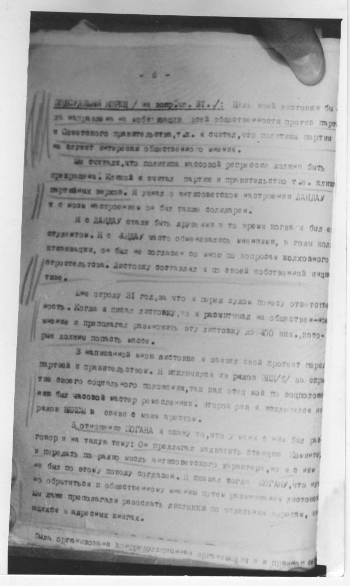
- 6 -
ПОДСУДИМЫЙ КОРЕЦ / на вопр. ВТ./: Цель моей листовки бы-
ла направлена на мобилизацию всей общественности против парт
и Советского правительства, т.к. я считал, что политика партии
не служит интересам общественного мнения.
Мы считали, что политика массовой репрессии должна быть
прекращена. Кликой я считал партию и правительство т.е. клику
партийных верхов. Я узнал о антисоветском настроении ЛАНДАУ
и с моим настроением он был также солидарен.
Я с ЛАНДАУ стали быть друзьями в то время когда я был е
студентом. Я с ЛАНДАУ часто обменивались мнениями, в годы кол-
лективизации, он был не согласен со мною по вопросам колхозного
строительства. Листовку составлял я по своей собственной иниц
тиве.
Мне строку 31 год, за что я перед судом понесу ответств
ность. Когда я писал листовку, то я рассчитывал на общественное
мнение и предполагал размножить эту листовку до 400 экз., кото-
рые должны помочь массе.
В написанной мною листовке я заявил свой протест перед
партией и правительством. Я исключился из рядов ВЛКСМ / за скры
тие своего социального положения, так как отец мой по социальному
нию был часовой мастер ремесленник. Второй раз я исключен из
рядов ВЛКСМ в связи с моим арестом.
В отношении КОГАНА я скажу то, что у меня с ним был раз
говор и на такую тему: Он предлагал захватить станцию Коминтер
и передать по радио мысль антисоветского характера, но я с ним
не был по этому поводу согласен. Я сказал тогда КОГАНУ, что нуж
но обратиться к общественному мнению путем размножения листовок
Мы даже предполагали разводить листовки по отдельным городам, [нрзб]
издахах и адресных книгах.
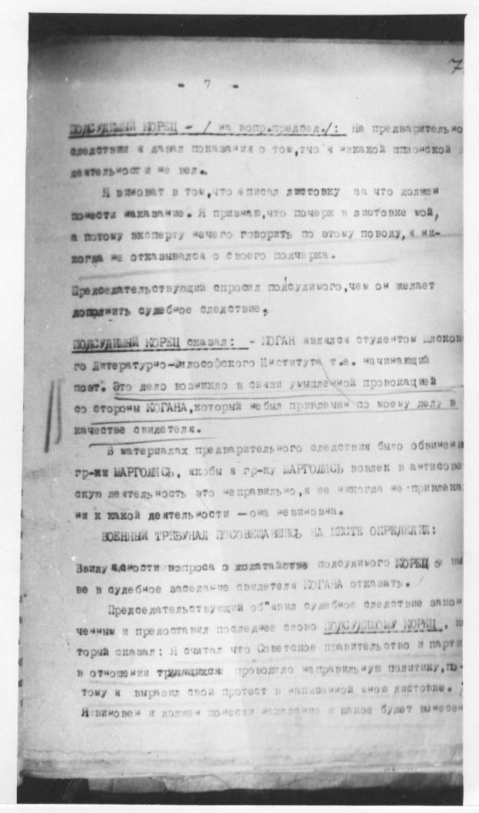
[на полях] 7
- 7 -
ПОДСУДИМЫЙ КОРЕЦ - / на вопр. председ./: На предварительном
следствии я давал показания о том, что я никакой шпионской
деятельности не вел.
Я виноват в том, что я писал листовку за что должен
понести наказание. Я признаю, что почерк в листовке мой,
а потому эксперту нечего говорить по этому поводу, я ни-
когда не отказывался от своего почерка.
Председательствующий опросил подсудимого, чем он желает
дополнить судебное следствие.
ПОДСУДИМЫЙ КОРЕЦ сказал: - КОГАН являлся студентом Москов
ского Литературно-философского Института т.е. начинающий
поэт. Это дело возникло в связи умышленной провокацией
со стороны КОГАНА, который не был привлечен по моему делу в
качестве свидетеля.
В материалах предварительного следствия было обвинение
гр-ки МАРГОЛИС, якобы я гр-ку МАРГОЛИС вовлек в антисовет
скую деятельность это неправильно, я ее никогда не привлека
ни к какой деятельности - она невиновна.
ВОЕННЫЙ ТРИБУНАЛ ПОСОВЕЩАВШИСЬ НА МЕСТЕ ОПРЕДЕЛИЛ:
Ввиду ясности вопроса о ходатайстве подсудимого КОРЕЦ о вы
зове в судебное заседание свидетеля КОГАНА отказать.
Председательствующий объявил судебное следствие закон
ченным и предоставил последнее слово ПОДСУДИМОМУ КОРЕЦ, ко
торый сказал: Я считал что Советское правительство и партия
в отношении трудящихся проводило неправильную политику, по-
тому я выразил свой протест в написанной мною листовке.
Я виновен и должен понести наказание и какое будет вынесен
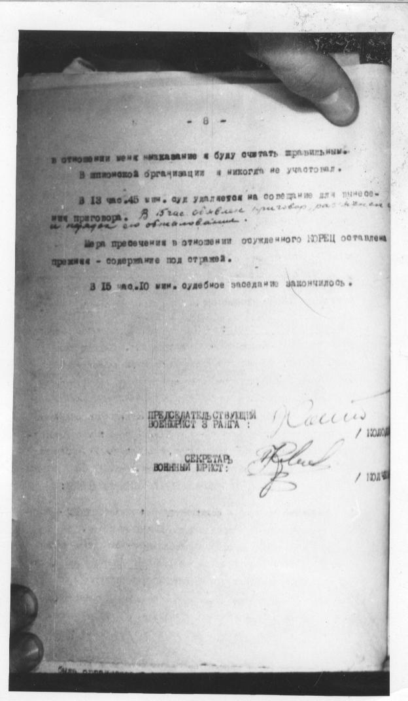
- 8 -
в отношении меня наказание я буду считать правильным.
В шпионской организации я никогда не участвовал.
В 13 час.45 мин. суд удаляется на совещание для вынесе-
ния приговора. В 15 час. объявлен приговор, разъяснен
и вручен его обвиняемому.
Мера пресечения в отношении осужденного КОРЕЦ оставлена
прежняя - содержание под стражей.
В 15 час.10 мин. судебное заседание закончилось.
ПРЕДСЕДАТЕЛЬСТВУЮЩИЙ
ВОЕНЮРИСТ 3 РАНГА: [нрзб] / КОЛОДКА
СЕКРЕТАРЬ
ВОЕННЫЙ ЮРИСТ: [нрзб] / ЮЛЧЕВ
Текст снят со снимков дела. Неразобранные слова отмечены [нрзб]. Там, где страница слишком бледная, оставлен только снимок.